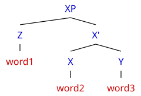
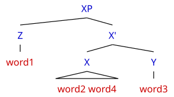
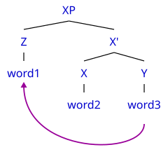
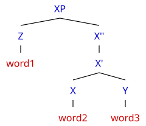
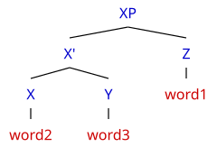
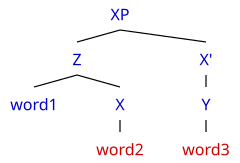
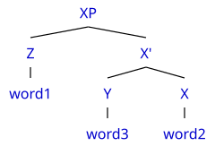
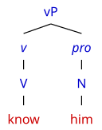

使用方法
一、基础操作
1. 从零开始
本编辑器是简单而轻量化的句法树编辑器，可以简单方便地创建句法树。
点击上方按钮「空白画布」，可以从一个节点都没有的状态开始画。点击其他示例，也可以通过直接对其进行修改。 清空下面的源代码框，画布也会变成空白。粘贴来自其他地方的括号表示的源代码，也可以直接立即生成句法树。
在空白画布点击一下，编辑器就创建一个根节点，并且立刻打开改名框输入标签。 直接点击范畴按钮（S、CP、VP 等），编辑器会用那个标签创建一个根节点。
上面的五个示例按钮可以随便点着看。载入示例会覆盖当前的句法树， 不过可以按 Ctrl+Z 撤销载入操作。
2. 创建节点
可以为节点增加一个女儿节点或者姊妹节点。
| Enter | 编辑器会创建一个女儿节点，并且立刻打开改名框。 |
| Shift+Enter | 编辑器会创建一个姊妹节点，并且立刻打开改名框。 |
| F2 | 编辑器会打开改名框，用于修改当前选中节点的标签。双击也可以触发。 |
使用键盘快捷键可以保持选中句法树中的节点，因此仅需要键盘就可以操作。 用鼠标点工具栏上的「＋女儿节点」或「＋姊妹节点」同样可以创建节点，支持点击节点进行操作。
点范畴按钮（S、CP、VP 等）可以把标签直接套到当前选中的节点上，比打字快。 其中 v 和 pro 在树里也用斜体显示。
3. 删除节点
删除节点会把该节点及其整棵子树一并移除。
选中一个节点之后按 Delete，或者点工具栏的「删除」， 编辑器就会把该节点和它的整棵子树一起删掉。
对根节点进行删除操作比较特殊：
- 它没有女儿节点时，删除会让画布回到空白状态。
- 它只有一个女儿节点时，编辑器会把这个女儿节点提上来当新的根节点。
- 它有两个以上女儿节点时不允许删，因为剩下的分支没法安置。
4. 撤销与重做
撤销和重做可以在编辑历史中前后移动。
| Ctrl+Z | 编辑器会撤销上一步。改名框打开时也可以使用。 |
| Ctrl+Shift+Z | 编辑器会重做被撤销的一步。 |
在改名框里按 Ctrl+Z 是分两步的：若标签已被修改， 它先把标签恢复原样并留在框里；如果标签没动过，编辑器就退出改名框， 再撤销真正上一步的操作。
5. 创建三角
创建三角是指将多个词写进同一个叶子节点，编辑器会把该节点画成三角形。
我们先看一棵最普通的树， 它的每个词都各占一个叶子节点：
[XP [Z word1] [X' [X word2] [Y word3]]]

现在在 word2 后面空一格、再写一个词：
[XP [Z word1] [X' [X word2 word4] [Y word3]]]
相邻的两个词会合成同一个叶子节点，该叶子的标签是 "word2 word4"。
编辑器把这种「一个节点底下压着好几个词」的情况画成三角形：

所以创建三角只有一步：把词写在一起，编辑器就自动画成三角形。
要注意它和两个独立叶子节点的区别 —— [X word2] [Y word3] 是两个叶子节点，
而 [X word2 word4] 是一个叶子节点。
6. 创建箭头
在规则记法末尾添加一行表示移位关系的声明，可以创建移位箭头。
图上没法直接画箭头，要在代码面板里写。还是从同一棵最普通的树出发：
[XP [Z word1] [X' [X word2] [Y word3]]]
点代码面板上方的「规则记法」，编辑器会把这棵树按一条一条的边列出来，长这样：
0 XP -> Z 0 XP -> X' 1 Z -> word1 2 X' -> X 2 X' -> Y 4 X -> word2 5 Y -> word3
这就是改动之前的样子。如果想创建 word3 指向 word1 的移位箭头，那么：
- 观察代码左侧存在带有行号的装订线。
- 第一次引入这个节点的行号，就是这个节点的编号。 要查找节点的编号，只需要寻找左侧的行号。
-
读出要连起来的两个词：
word1在第 3 行，编号是 3；word3在第 7 行，编号是 7。 -
在最后单独加一行
7 --> 3。 它的意思是「把编号 7 的那个词移到编号 3 那个词的位置」， 也就是把word3移到word1的位置。
0 XP -> Z 0 XP -> X' 1 Z -> word1 <- word1 在第 3 行，编号是 3 2 X' -> X 2 X' -> Y 4 X -> word2 5 Y -> word3 <- word3 在第 7 行，编号是 7 7 --> 3
写完这一行，图上就多出一条从 word3 指向 word1 的箭头：

箭头的起点必须是叶子节点（比如 word3 这样的词），
落点可以是任何节点，也包括根节点。
7. 导出
当前句法树可以导出为矢量图或者位图。
点击「SVG」可以导出一张矢量图，矢量图能直接插进 Word、LaTeX 或 Illustrator。 点击「PNG」可以导出一张两倍分辨率的位图。选中高亮不会被导出。
二、进阶操作
1. 垂直对齐
垂直对齐可以改变节点的纵向位置。
工具栏下方的「按层级」「词对齐底部」「整树贴底」三个按钮决定各个层次的纵向位置。 载入上面的「移位例句」，切换三个模式，即可看出三者的区别。
| 按层级 | 每个节点都待在自己那一层的行上，同一层的节点处在同一个高度。 |
| 词对齐底部 | 所有叶子节点（也就是词）落到最下面一行，中间节点保持原来的层次。 |
| 整树贴底 | 叶子节点对齐到底部之后，中间节点尽量下移贴住自己的女儿节点，整棵树压缩到底线。 |
垂直对齐只改变节点的纵向位置，横向位置由「水平位置」决定。
2. 水平位置
水平位置可以改变母亲节点的横向位置。
「水平位置」决定母亲节点在横向上站在哪里：
| 母亲节点居中 | 母亲节点落在最左和最右那两个女儿节点的正中间。（默认） |
| 节点整体居中 | 母亲节点居中于所有女儿节点的包围盒，整棵子树看起来更平衡。 |
只有存在拥有两个宽度不等的女儿节点时，两种模式才有区别。
3. 方向键选中
方向键选中可以用键盘在节点之间移动选中状态。
在图上点一下取得键盘焦点之后，就可以用方向键在节点之间移动选中状态。 四个键就是四个方向：
| ↑ | 跳到母亲节点。 |
| ↓ | 跳到最左边的那个女儿节点。 |
| ← | 跳到左姊妹节点。 |
| → | 跳到右姊妹节点。 |
已经是最边上的那个节点时，← → 会跨到母亲节点的同侧姊妹节点底下， 去找最靠近的堂表姊妹节点。这个范围和左移右移的 Alt+←/→ 一致。
4. 下移
下移是在这个节点上创建一个投射层的快捷操作。
下移的作用是给投射链增加一层。先看这棵树：
现在选中 X，按 Tab（或者点工具栏的「下移」）。
X 所在的投射链是 X → X'，再往上到 XP 就断了，
因为 XP 不是 X''。所以链顶是 X'。
编辑器会在链顶的上面插一层 X''，
并把 X' 除 X 以外的女儿节点（这里是 Y）留在原来的高度、
改挂到 X'' 底下：

对着图看两个变化：X'' 底下现在有 X' 和 Y 两个女儿节点，
而 X' 底下只剩下 X。
写成括号记法就是 [XP [Z word1] [X'' [X' [X word2]] [Y word3]]]。
下移只作用于被选中节点及其支配的节点，链顶其余女儿节点的高度保持不变。
5. 上移
上移是撤销一层投射层的快捷操作。
上移是下移的逆操作，但条件比较严格。这一次从下移之后的样子出发：
选中 X' 不能进行上移。上移要求母亲节点只有选中的唯一一个女儿节点，
而 X' 的母亲节点是 X''，X'' 底下有 X'
和 Y 两个女儿节点，不满足条件，
所以「上移」按钮这时是禁用的。
选中 X 可以进行上移。X 的母亲节点是 X'，
X' 底下确实只有 X 一个女儿节点，
且 X' 的标签正好是 X 加一个撇 —— 同时满足两个条件。
于是编辑器删掉 X'、让 X 顶替该节点的位置，
再把 X' 以上的每一层各减去一个撇（X'' 就变回了 X'）：
结果正好回到最开始的 [XP [Z word1] [X' [X word2] [Y word3]]]，
也就是下移之前的原样。注意 Y 又回到了 X' 底下。
上移需要同时满足两个条件：母亲节点只有被选中的那一个女儿节点，且母亲节点的标签是选中节点名称加一个撇。
6. 左移和右移
左移和右移可以把节点在同级之间移动。
这两个操作作用在当前选中的节点上，而且完全对称。每一个方向都分两种情况。
| 左移 |
① 如果选中的节点有左姊妹节点，编辑器会将其和左姊妹节点交换位置，也就是原地左挪一位。 ② 如果选中的节点是最左边的女儿节点，编辑器会将其移动到母亲节点的左姊妹节点底下， 作为那个姊妹节点的最右边的女儿节点。 |
| 右移 |
① 如果选中的节点有右姊妹节点，编辑器会将其和右姊妹节点交换位置，也就是原地右挪一位。 ② 如果选中的节点是最右边的女儿节点，编辑器会将其移动到母亲节点的右姊妹节点底下， 作为那个姊妹节点的最左边的女儿节点。 |
还是用同一棵树，分别看三种情况：
选中 X' 左移：X' 有左姊妹节点 Z，走 ①，二者换位。

选中 X 左移：X 没有左姊妹节点
（它是 X' 最左边的女儿节点），所以走 ②，
搬到母亲节点 X' 的左姊妹节点 Z 底下，当 Z 最右边的女儿节点。

选中 X 右移：X 有右姊妹节点 Y，走 ①，二者换位。

三种结果都在图上。如果既没有那一侧的姊妹节点、 母亲节点也没有那一侧的姊妹节点，那么工具栏上的按钮会变成禁用状态， 按快捷键也不会有任何改动。
7. 斜体
在规则记法末尾添加一行表示字体的声明，可以将节点的标签改成斜体显示。
语言学里有些词习惯写成斜体（比如小 v、pro、语迹）。 在末尾单独加一行声明，括号里填节点编号，就可以把这些节点变成斜体：
Italic(1, 3)
这一行让编号 1 和编号 3 那两个节点的标签变成斜体。 编号怎么数参考 1.6 创建箭头。
声明只能写在末尾、单独成行。规则记法里声明排在所有边和位移箭头之后； 括号记法里声明排在整棵树之后：
[vP [v [V know]] [pro [N him]]] Italic(1, 2)

这棵树里 vP=0，三个女儿依次是 v=1、pro=2、
NP=3，所以这一行让 v 和 pro 变成斜体。
多个编号用逗号隔开，顺序随意。
编号随结构自动重算，增删节点不会让斜体跟错节点。
三、源代码说明
在代码框里直接输入源代码，效果和图形化编辑完全一致，两边始终同步。 代码框上方有两个按钮，可以在这两套等价的记法之间切换。切换的时候树不会改变，只是换一种写法。
| 括号记法 | 语言学通行的写法。可以兼容 jsSyntaxTree 的代码。 |
| 规则记法 | 一行写一条边。绘制位移箭头和改为斜体建议使用这种记法。 |
1. 括号记法
这一套写法沿用语言学通用的括号记法（labelled bracket notation）。
[S [NP Dogs][VP barks]] | 方括号表示节点，裸标签表示叶子节点。 |
[N_s Dogs] | _ 后面的内容会写成下标。 |
[N^s Cats] | ^ 后面的内容会写成上标。 |
["Main clause" [S][V][O]] | 标签里含空格、引号、_ 或 ^ 时，用双引号将标签整体括起来。 |
[S NP VP] | 相邻的裸标签会合成一个多词叶子节点，编辑器把该节点画成三角形，表示省略的下层结构。 |
[S [NP] [VP]] | 这才是两个各含一个词的叶子节点。和上一行画出来一模一样，但结构含义不同。 |
[A [B C][D E][F G ->6]] | 位移箭头，数字是节点编号。写起来不如规则记法直观。 |
[X'' [X word]] | 方括号包起来的空节点表示「没有展开的范畴」，该节点不是词，不染红。 |
2. 规则记法
每行写一条「母亲节点 → 女儿节点」的边，适合逐条核对。下面这棵树：
[XP [D w1] [X' [X w2] [Y w3]]]
写成规则记法是这样的：
0 XP -> D 0 XP -> X' 1 D -> w1 2 X' -> X 2 X' -> Y 4 X -> w2 5 Y -> w3
每一行的格式是：母亲节点编号 · 母亲节点标签 · 箭头 · 女儿节点标签。
| 根节点 | 编号固定是 0。 |
| 其余节点 | 编号等于该节点第一次出现在箭头右边的那一行的行号。 |
| 行号 | 显示在代码框左边的装订线上，不在文本里，框选复制不会带上行号。装订线给每一行都编号，包括空行和箭头行。 |
| 引用顺序 | 母亲节点必须先在前面出现过，编号一定小于当前行号。同一个母亲节点的行不必连续。 |
| 标签 | 含空格、引号、_ 或 ^ 时用双引号括起来。下标上标写在标签后面，例如 NP_1、N^s、"the mailman"_1。 |
| 编号错误 | 中间插一行或删一行会让下面的引用错位，编辑器会自动把行首编号改回正确值，不需要自己数。 |
上面那棵树里编号依次是 XP=0 D=1 X'=2 w1=3 X=4 Y=5 w2=6 w3=7，
也就是左边装订线上的 1 到 7。所以「把 w3 移到 w2 的位置」写成单独一行：
7 --> 6
| 格式 | 起点编号 --> 落点编号，放在所有边的后面。 |
| 起点 | 必须是叶子节点，因为记法里箭头挂在叶子上。 |
| 落点 | 可以是任何节点，也包括根节点（写成 --> 0）。 |
| 编号 | 两套记法共用同一套，所以同一个箭头在两边的数字一样。 |
四、注意事项
-
只有词才会被染成红色。判断标准是该节点在记法里写成裸标签，也就是该节点是母亲节点唯一的女儿节点。
用方括号包起来的空节点表示「没有展开的范畴」，其颜色与非叶子节点相同。
例如在
[XP [D [X'' [X word] [Y]]] [X']]里，只有word是词，Y和X'都不染色。 -
相邻的裸标签会被当成一个多词叶子节点。所以
[S NP VP]表示 S 底下只有一个叶子节点"NP VP"，而不是 NP 和 VP 两个叶子节点。需要表示两个叶子节点时，应写成[S [NP] [VP]]。这两种写法画出来一模一样，但是结构含义不同。 - 标签里不能包含双引号，因为记法里没有转义写法。编辑器会在输入时自动去掉双引号。
- 叶子节点一旦有了女儿节点，该节点原有的位移箭头会被清除，因为记法无法表示「带箭头的非叶子节点」。
-
括号记法允许使用
-->、<-、<>作为位移箭头的输入， 编辑器能兼容读取，但是一律会改写成->。 -
规则记法必须有至少一条边。只有一个孤立节点的树（例如
[X]）在规则记法里是空的。 - 代码框里手写的写法可能会和导出的写法不完全一致，例如空格数量、箭头写法和规则记法的行号。 这是正常的，因为代码框不会在输入时改写文本，否则光标会被打断。 唯一的例外是规则记法里的行首编号，编辑器会主动修正。